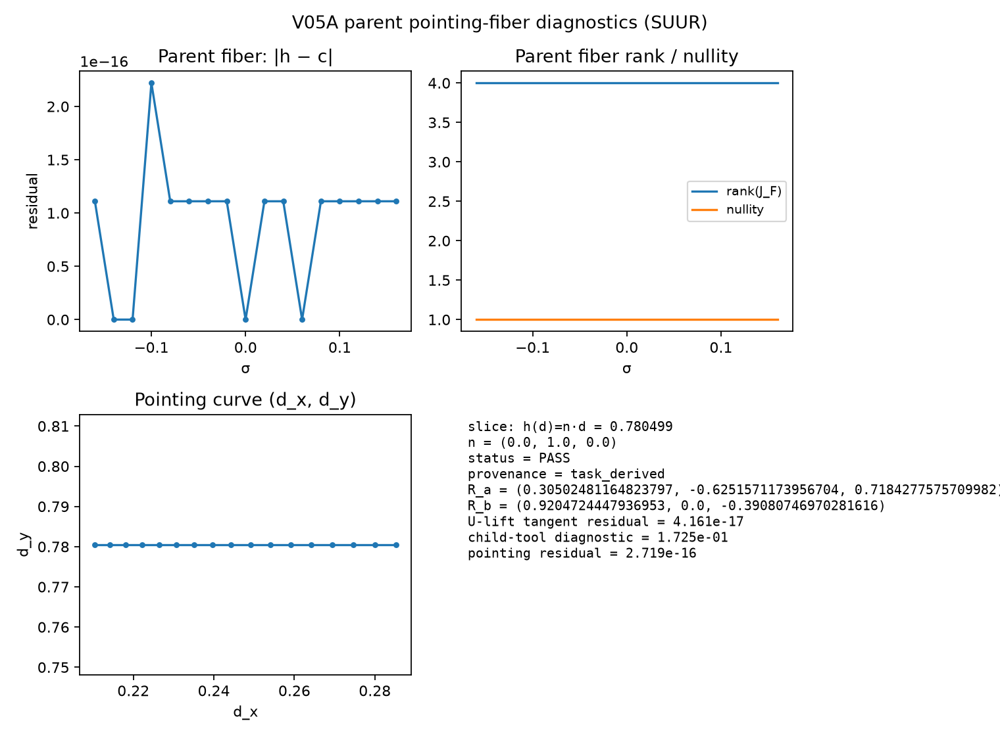
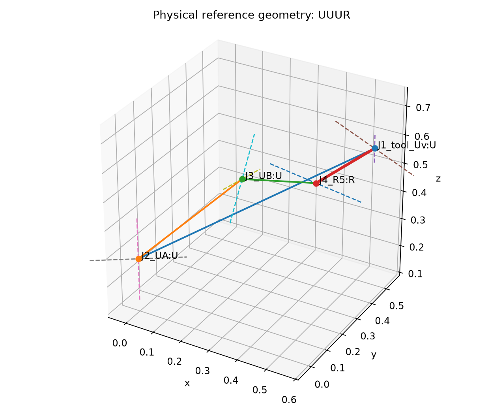
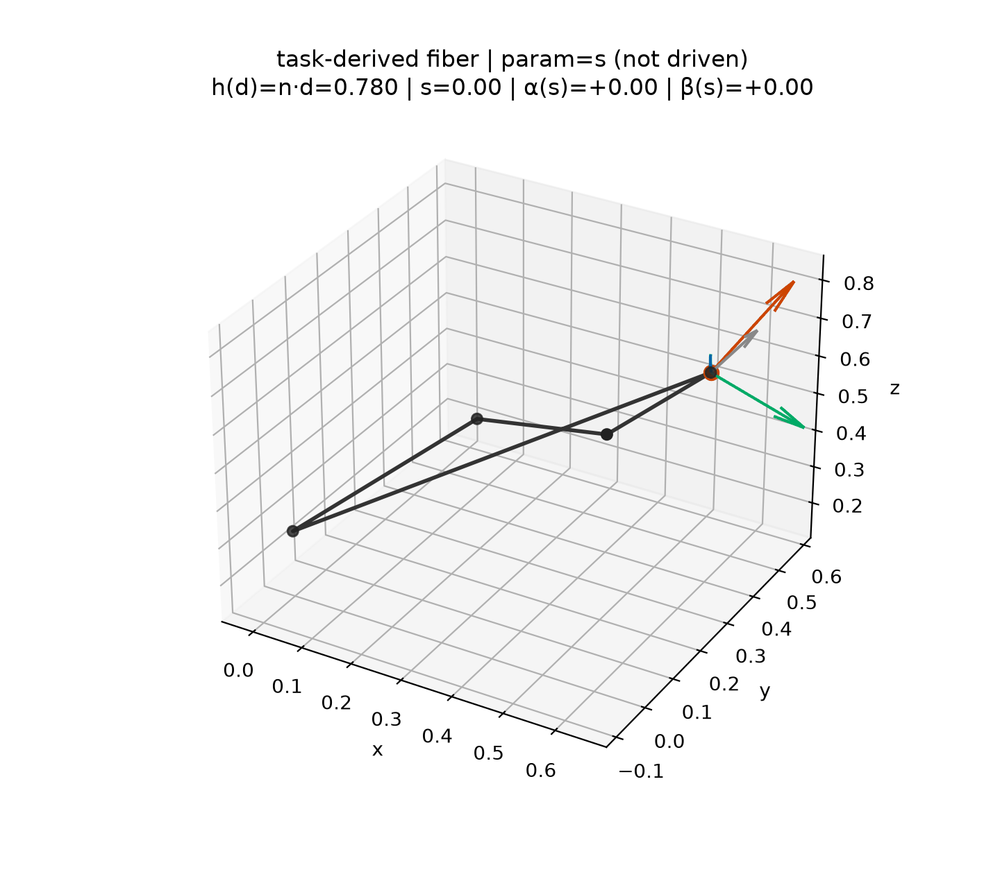

SUUR → UUUR MVP on the intersecting-pairs aligned-terminal architecture. SSRR-line parents and the full V05B winding atlas are deferred.
slice_provenance=task_derived.
Only PASS rows are atlas-admissible. Standalone V02B–V04 geometries remain
mechanism_explorer_only.
| Field | Value |
|---|---|
| slice_id | suur_ip_primary_n |
| family | UUUR |
| parent_line | SUUR |
| slice | h(d)=n·d = 0.78049893 |
| n | (0.0, 1.0, 0.0) |
| architecture | IntersectingPairsAligned6R |
| parent rank / nullity | 4 / 1 |
| dh/dq6 | 0.000e+00 |
| accepted fiber samples | 17 |
| child rank / nullity | 6 / 1 |
| U-lift tangent residual | 4.161285e-17 |
| child-tool tangent diagnostic | 1.724987e-01 |
| lifted (α′, β′) | (2.575490e-01, -5.030079e-17) |
| pointing-curve residual | 2.719480e-16 |
| fiber_equivalence_status | PASS |
S_v centerdR_a / R_b axesh(d)=n·d=cα(s) / β(s) readoutsparam=s (not driven)The first GIF may be partial (short child branch) but must name these elements.



phi to a fiber parameter